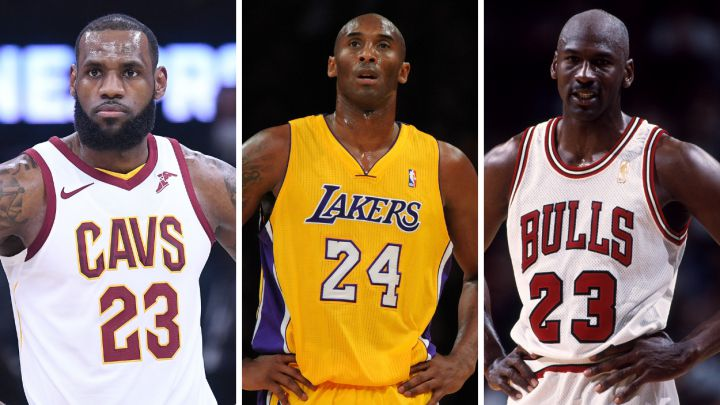

The Quest for the GOAT
Who is the GOAT?
For decades armchair athletes have been debating, who is the the greatest basketball player of all time: LeBron James, Kobe Bryant or Michael Jordan.
But who really is the GOAT? Based on our analysis it is clear who the best player of all times is and we can finally put these debates to rest.

The Data
We based our findings off of various datasets from Kaggle.com.
Back to Basics
First we looked at some basic aggregates to see if a top player emerged.
Michael Jordan
- 15 seasons
- 1072 games
- 6 NBA championships
- 5x NBA MVP
- 14x NBA All-Star
- 32,292 career points
- 30.1 PPG
Kobe Bryant
- 20 seasons
- 1,346 games
- 5 NBA championships
- 1x NBA MVP
- 18x NBA All-Star
- 33,643 career points
- 25 PPG
LeBron James
- 20 seasons & counting
- 1,378 games
- 4 NBA championships
- 4x NBA MVP
- 18x NBA All-Star
- 37,371 career points
- 27.1 PPG
What does this mean? Still no clear winner based on these initial statistics.
More advanced statistics
Behind the scenes
goat.sub <- goat %>%
group_by(player) %>%
select(player, playereffrating,trueshootingperc,freethrowrate,winshare,overallbpm,valueoverreplace)%>%
summarise(across(everything(), mean))
goat.sub <- goat.sub %>%
mutate(playereffrating=round(playereffrating,2)) %>%
mutate(trueshootingperc=round(trueshootingperc*100,2))%>%
mutate(freethrowrate=round(freethrowrate*100,2))%>%
mutate(winshare=round(winshare,2))%>%
mutate(overallbpm=round(overallbpm,2))%>%
mutate(valueoverreplace=round(valueoverreplace,2))
ft <- flextable(goat.sub)
ft <- set_header_labels(ft,
values = list(
player = "Player",
playereffrating = "Player Efficiency Rating",
trueshootingperc = "True Shooting %",
freethrowrate = "Free Throw Rate",
winshare = "Win Share",
overallbpm = "Overall BPM",
valueoverreplace = "Value Over Replacement"
)
)
ft <- theme_booktabs(ft)
ft <- align( ft, align = "center", part = "all" )
ft <- bold(ft, part = "header") # bold header
ft <- bg(ft, i = ~ playereffrating > 27.9 & trueshootingperc > .58 & freethrowrate > 43 & winshare > 9.5 & overallbpm > 10 & valueoverreplace > 5,
j = ~ playereffrating + trueshootingperc + freethrowrate + winshare + overallbpm + valueoverreplace,
bg = "wheat", part = "body")
ftPlayer | Player Efficiency Rating | True Shooting % | Free Throw Rate | Win Share | Overall BPM | Value Over Replacement |
|---|---|---|---|---|---|---|
Kobe Bryant | 21.40 | 54.13 | 37.49 | 5.74 | 3.04 | 2.47 |
Lebron James | 27.94 | 58.49 | 43.04 | 9.58 | 10.06 | 5.61 |
Michael Jordan | 27.84 | 56.34 | 38.60 | 9.06 | 8.65 | 4.55 |
Let’s Get Advanced
We turned to various advanced statistics for more clarity and chose to look at each players Box Plus-Minus(BPM) throughout their careers.
BPM is a metric that:
- is derived from a player’s own statistics (points, rebounds, and assists, etc.), along with their position, and overall team performance
- estimates a player’s contribution to the team when that player is on the court in points above the NBA average, which is 0
- Example: a BPM of +5 means that per game, the team is 5 points better with the player on the court than with the average NBA player
BPM: Individual Player vs. Team
How do they stack up against their teammates each season?
Behind the scenes
#remove all * from the Player column
fullnba$Player<- gsub("[*]", "", fullnba$Player)
#convert season to year
goat$season<-as.Date(goat$season, format="%Y")
goat$year<-year(goat$season)
#define custom colors
bullsred = "#CE1141"
lakeryellow = "#FDB927"
lakerpurple = "#552583"
cavswine = "#6f263d"
cavsgold = "#ffb81c"
miamigold = "#F9A01B"
miamired = "#98002E"
#filter dataset for specific players
justmj<-filter(goat, player == "Michael Jordan")%>%
group_by(year) %>%
summarise(mean = mean(overallbpm, na.rm=TRUE))
justkb<-filter(goat, player == "Kobe Bryant")%>%
group_by(year) %>%
summarise(mean = mean(overallbpm, na.rm=TRUE))
justlj<-filter(goat, player == "Lebron James", between(year, 2003, 2017))%>%
group_by(year) %>%
summarise(mean = mean(overallbpm, na.rm=TRUE))
wizbpm<-filter(fullnba, Player != "Michael Jordan", Tm == "WAS", between(Year, 2001, 2002))
cavbpm<-filter(fullnba, Player != "LeBron James", Tm == "CLE", between(Year, 2003, 2009))
miabpm<-filter(fullnba, Player != "LeBron James", Tm == "MIA", between(Year, 2010, 2013))
cav2bpm<-filter(fullnba, Player != "LeBron James", Tm == "CLE", between(Year, 2014, 2017))
lakbpm<-filter(fullnba, Player != "LeBron James", Tm == "LAL", between(Year, 2017, 2018))
#plots
#Michael Jordan
mj<-fullnba %>%
filter(Player != "Michael Jordan", Tm == "CHI", between(Year, 1983, 2000)) %>%
ggplot(aes(x=Year, y=BPM, fill="black"))+
geom_point(alpha=.2, size=2)+
geom_point(data=wizbpm, aes(x=Year, y=BPM), alpha=.2, size=2, fill="black")+
geom_point(data=justmj, aes(x=year, y=mean, color=bullsred), size=3)+
scale_colour_manual(values = bullsred)+
scale_x_continuous(breaks=seq(1983, 2002, 1))+
geom_hline(yintercept = 0, alpha=.1, size=2, linetype="solid")+
geom_vline(xintercept = 1993, alpha=.05, size=8, linetype="solid")+
geom_vline(xintercept = 1999, alpha=.05, size=40, linetype="solid")+
geom_point(aes(x=1990, y=12.3),color='black', fill=bullsred, size=3, shape=21)+
geom_point(aes(x=1991, y=9.1),color='black', fill=bullsred, size=3, shape=21)+
geom_point(aes(x=1992, y=10.2),color='black', fill=bullsred, size=3, shape=21)+
geom_point(aes(x=1995, y=8.35),color='black', fill=bullsred, size=3, shape=21)+
geom_point(aes(x=1996, y=7.7),color='black', fill=bullsred, size=3, shape=21)+
geom_point(aes(x=1997, y=5.4),color='black', fill=bullsred, size=3, shape=21)+
annotate("text", x = 1993, y = 15, label = "RETIRED", family="sans", size=3)+
annotate("text", x = 1999, y = 15, label = "RETIRED", family="sans", size=3)+
theme_minimal()+
theme(
legend.position="none",
panel.grid.minor = element_blank(),
panel.grid.major = element_blank(),
axis.title.y = element_text(margin = margin(t = 0, r = 20, b = 0, l = 0)),
axis.title.x = element_text(margin = margin(t = 20, r = 0, b = 0, l = 0)),
plot.title = element_text(margin = margin(t = 0, r = 0, b = 20, l = 0))
)+
labs(
title="Michael Jordan v. Bulls (1983-2000) & Wizards (2001-2002)",
y="BPM",
x="Season (Starting Year)"
)Warning: Using `size` aesthetic for lines was deprecated in ggplot2 3.4.0.
ℹ Please use `linewidth` instead.Behind the scenes
#Kobe Bryant
kb<-fullnba %>%
filter(Player != "Kobe Bryant", Tm == "LAL", between(Year, 1996, 2015)) %>%
ggplot(aes(x=Year, y=BPM, fill="black"))+
geom_point(alpha=.2, size=2)+
geom_point(data=justkb, aes(x=year, y=mean, color=lakeryellow), size=3)+
scale_colour_manual(values = lakeryellow)+
scale_x_continuous(breaks=seq(1996, 2015, 1))+
geom_hline(yintercept = 0, alpha=.1, size=2, linetype="solid")+
geom_vline(xintercept = 2013, alpha=.05, size=8, linetype="solid")+
geom_point(aes(x=1999, y=4.3),color=lakerpurple, fill=lakeryellow, size=3, shape=21)+
geom_point(aes(x=2000, y=5.75),color=lakerpurple, fill=lakeryellow, size=3, shape=21)+
geom_point(aes(x=2001, y=3.85),color=lakerpurple, fill=lakeryellow, size=3, shape=21)+
geom_point(aes(x=2008, y=6),color=lakerpurple, fill=lakeryellow, size=3, shape=21)+
geom_point(aes(x=2009, y=4.75),color=lakerpurple, fill=lakeryellow, size=3, shape=21)+
annotate("text", x = 2013, y = 15, label = "INJURED", family="sans", size=3)+
theme_minimal()+
theme(
legend.position="none",
panel.grid.minor = element_blank(),
panel.grid.major = element_blank(),
axis.title.y = element_text(margin = margin(t = 0, r = 20, b = 0, l = 0)),
axis.title.x = element_text(margin = margin(t = 20, r = 0, b = 0, l = 0)),
plot.title = element_text(margin = margin(t = 0, r = 0, b = 20, l = 0))
)+
labs(
title="Kobe v. Lakers (1996-2015)",
y="BPM",
x="Season (Starting Year)"
)
#LeBron James
lj<-cavbpm %>%
ggplot(aes(x=Year, y=BPM, fill="black"))+
geom_point(alpha=.2, size=2)+
geom_point(data=cav2bpm, aes(x=Year, y=BPM), alpha=.2, size=2, fill="black")+
geom_point(data=miabpm, aes(x=Year, y=BPM), alpha=.2, size=2, fill="black")+
geom_point(data=lakbpm, aes(x=Year, y=BPM), alpha=.2, size=2, fill="black")+
geom_point(data=justlj, aes(x=year, y=mean, color=cavswine), size=3)+
scale_colour_manual(values = cavswine)+
scale_x_continuous(breaks=seq(2003, 2018, 1))+
geom_hline(yintercept = 0, alpha=.1, size=2, linetype="solid")+
geom_point(aes(x=2011, y=11),color=cavsgold, fill=cavswine, size=4, shape=21)+
geom_point(aes(x=2012, y=10.9),color=cavsgold, fill=cavswine, size=4, shape=21)+
geom_point(aes(x=2015, y=11.1),color=cavsgold, fill=cavswine, size=4, shape=21)+
theme_minimal()+
theme(
legend.position="none",
panel.grid.minor = element_blank(),
panel.grid.major = element_blank(),
axis.title.y = element_text(margin = margin(t = 0, r = 20, b = 0, l = 0)),
axis.title.x = element_text(margin = margin(t = 20, r = 0, b = 0, l = 0)),
plot.title = element_text(margin = margin(t = 0, r = 0, b = 20, l = 0))
)+
labs(
title="LeBron v. Caveliers (2003-2009 & 2014-2017), Heat (2010-2013) & Lakers (2017)",
y="BPM",
x="Season (Starting Year)"
)Behind the scenes
plot(mj)Behind the scenes
plot(kb)Behind the scenes
plot(lj)
BPM: GOAT v GOAT
The GOAT is Revealed
With a career average BPM of 8.1 and solid performance in both regular season and playoff games, LeBron James is called King James for a reason.